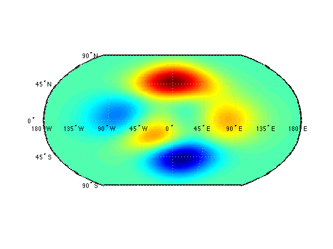
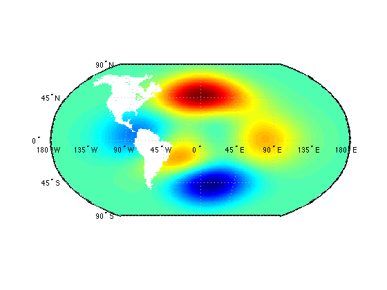
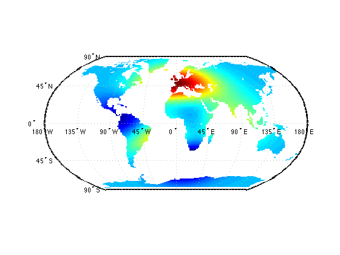

landmask documentation
This function returns a logical array describing the landness of any given lat/lon arrays. Requires Matlab's Mapping Toolbox.
This function uses Matlab's built-in coast.mat file with inpolygons to determing whether input lat/lons are inside or outside perimeters of land areas.
Contents
Syntax
land = landmask(lat,lon) land = landmask(...,'landmass') land = landmask(...,quality)
Description
land = landmask(lat,lon) returns logical land array corresponding to the dimensions of input lat and lon. 1 is land, 0 is not land.
land = landmask(...,'landmass') specifies any of the following regions of mask:
- 'Antarctica'
- 'Africa and Eurasia'
- 'North and South America'
- 'Greenland'
- 'Australia'
- 'Baffin Island'
- 'Ellesmere Island'
- 'New Guinea'
- 'Great Britain'
- 'Borneo'
- 'Honshu'
- 'Victoria Island'
- 'Celebes'
- 'New Zealand North Island'
- 'Sumatra'
- 'Madagascar'
- 'Iceland'
- 'New Zealand South Island'
- 'Newfoundland'
- 'Luzon'
- 'Devon Island'
- 'Ireland'
- 'Cuba'
- 'Java'
- 'Mindanao'
land = landmask(...,quality) specifies quality from 0 to 100. This option is provided because for large data sets, the land mask function can take quite some time. For example, on my laptop, a calculating 180x360 land mask for all continents takes about 65 seconds at 100% quality. Default quality is 95, which takes about 6 seconds for the same dataset on my laptop. The quality setting is only used when calculating the land mask using all of the world's continents. For single land masses, 100% quality is assumed.
Example 1: Is Topeka, KS on land?
Topeka, Kansas is located at (39.06N, 95.69W). Is Topeka situatated on land?
TopekaLand = landmask(39.06,95.69)
TopekaLand =
1
As it turns out, yes, Topeka is well grounded. But is it in Australia?
TopekaAustralia = landmask(39.06,95.69,'australia')
TopekaAustralia =
0
Zero means nope.
Example 2: Gridded data
Start with some sample gridded data:
[lon,lat] = meshgrid(linspace(-179, 179, 180),... linspace(-89.5,89.5, 180)); z = peaks(180); worldmap('world') h=pcolorm(lat,lon,z);
To mask-out the land area of North and South America, set all z values corresponding to the land area of these two continents to NaN. Start by deleting the pcolorm surface we plotted above. This calculation may take about 3 to 5 seconds on a modern laptop computer:
delete(h)
Americas = landmask(lat,lon,'North and South America');
z(Americas) = NaN;
h=pcolorm(lat,lon,z);
 To instead mask out all the world's oceans, set non-land areas to NaN. First we'll delete the last pcolorm surface and refresh our z data. Then we'll calculate the ocean mask by taking the logical not of the land mask.
Using default quality of 95, land mask calculation for our 180x180 grid takes about 5 seconds on my laptop from 2012. Using a quality value of 100 takes 28 seconds. Changing the quality setting effectively reduces the resolution of the coast line, and something to keep in mind here is that our surface data are rather low resolution, so nothing would be gained by using a quality factor of 100%. Let's just use the default 95%:
delete(h) z = peaks(180); ocean = ~landmask(lat,lon); z(ocean) = NaN; h=pcolorm(lat,lon,z);
Author Info
This function and supporting documentation were written by Chad A. Greene of the University of Texas Institute for Geophysics (UTIG) in December 2014. The landmask function was inspired by a Mathworks Answers forum post and Kelly Kearney's answer.